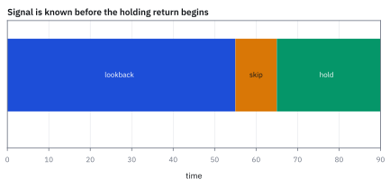

15.6 Momentum and Trend-Following: a Worked Strategy
กลยุทธ์จริงหนึ่งตัวตั้งแต่สัญญาณจนถึงเงินสุทธิ: นิยามเวลาให้ครบ หักต้นทุนในบรรทัดเดียวกัน นับว่าลองมากี่แบบ และใส่หุ้นที่ถูกถอนออกจากตลาดกลับเข้าไป
นักวิจัยเสนอกลยุทธ์ momentum บน NAV \$1 ล้าน: long หุ้นผู้ชนะ \$1 ล้าน short หุ้นผู้แพ้ \$1 ล้าน เดือนล่าสุดผู้ชนะได้เฉลี่ย 2.0% ผู้แพ้ได้ −1.5% และ backtest ชนะดัชนี 9 ใน 10 ปี เขาสรุปว่า “เดือนละ 3.5% ชนะเกือบทุกปี” ต้องถามอะไรก่อนเชื่อ ถ้า turnover ต่อเดือนคือ 60% ของ NAV ต้นทุน 0.35% ต่อ turnover หนึ่งหน่วย และกฎนี้เป็นตัวที่ดีที่สุดจาก 20 แบบที่ลอง?
ลองตอบก่อนเปิดเฉลย
หักต้นทุน $0.60\times0.35\%=0.21\%$ เหลือ 3.29% หรือ \$32,900 และสถิติชนะ 9 ใน 10 ปีอ่อนกว่าที่ฟัง กฎที่ไม่มีฝีมือเลยทำได้ด้วยโอกาส $11/1024\approx1.07\%$ แต่ถ้าเลือกตัวที่ดีที่สุดจาก 20 แบบ โอกาสที่อย่างน้อยหนึ่งแบบทำได้ด้วยโชคล้วนคือราว 19.4% ยังต้องถามต่อว่ารายชื่อหุ้นรวมหุ้นที่ถูกถอนออกจากตลาดแล้วหรือยัง
สิ่งที่เราจะสร้าง
คำถามที่ทดสอบได้คือ หุ้นที่ชนะในอดีตยังชนะต่อหรือไม่ วิธีตอบคือจัดอันดับหุ้นตามผลตอบแทนย้อนหลัง ซื้อกลุ่มบน short กลุ่มล่าง แล้วดูผลเดือนถัดไป เรียกว่า cross-sectional momentum ส่วน trend-following ดูผลตอบแทนย้อนหลังของแต่ละสินทรัพย์เอง บวกก็ long ลบก็ short
หน้านี้สร้างกฎตัวอย่างทีละขั้นตามวินัยของ 15.5 นิยามสัญญาณให้รู้ก่อนเทรด สร้างพอร์ต วัด turnover และหักต้นทุน นับว่าลองมากี่แบบ ตรวจรายชื่อหุ้นที่รอดมาถึงวันนี้ และจบที่ความเสี่ยงที่ long–short ไม่ได้ลบให้
ศัพท์ที่ใช้ในหัวข้อนี้
- Cross-sectional momentum
- จัดอันดับหลายหุ้น ณ เวลาเดียวกันตามผลตอบแทนย้อนหลัง แล้ว long ผู้ชนะ short ผู้แพ้ เดิมพันว่าผู้ชนะยังชนะผู้แพ้ต่อ
- Trend-following
- ดูผลตอบแทนย้อนหลังของแต่ละสินทรัพย์แยกกัน ขึ้นมาก็ long ลงมาก็ short เรียกอีกชื่อว่า time-series momentum
- Lookback และ skip month
- ช่วงอดีตที่ใช้คำนวณสัญญาณ และเดือนล่าสุดที่จงใจเว้นไว้ เพราะผลเดือนเดียวล่าสุดมักกลับทิศ
- Turnover
- สัดส่วนของ NAV ที่ซื้อขายในการปรับพอร์ตหนึ่งครั้ง นับด้านเดียว ใช้คำนวณต้นทุนการซื้อขาย
- Survivorship bias
- ความเอียงที่เกิดเมื่อข้อมูลเหลือแต่หุ้นหรือกองทุนที่รอดมาถึงวันนี้ ตัวที่ล้มหายไปไม่ถูกนับ
- Delisting return
- ผลตอบแทนงวดสุดท้ายของหุ้นที่ถูกถอนออกจากตลาด รวมเงินที่ผู้ถือได้คืนจริง ต้องใส่กลับเข้าไปใน backtest
- Momentum crash
- เดือนที่ผู้แพ้ในอดีตดีดกลับแรงกว่าผู้ชนะมาก มักเกิดตอนตลาดฟื้นหลังวิกฤต ขา short ขาดทุนหนักพร้อมกัน
สัญลักษณ์และหน่วย
| สัญลักษณ์ | ความหมาย | หน่วย |
|---|---|---|
| $P_{i,t},\ r_{i,t}$ | ราคาสิ้นเดือน $t$ และผลตอบแทนระหว่างเดือน $t$ ของหุ้น $i$ | USD และสัดส่วนต่อเดือน |
| $L$ | จำนวนเดือนใน lookback | เดือน |
| $s_{i,t}$ | สัญญาณ momentum ที่ใช้เลือกหุ้นสำหรับเดือน $t$ | สัดส่วน |
| $N_W,\ N_L$ | จำนวนหุ้นในกลุ่มผู้ชนะและผู้แพ้ | หุ้น |
| $w_i$ | น้ำหนักของหุ้น $i$ ต่อ NAV | สัดส่วนของ NAV |
| $\tau,\ q,\ c$ | turnover ด้านเดียว ต้นทุนต่อ turnover หนึ่งหน่วย และต้นทุนรวม | สัดส่วนของ NAV ต่อการปรับพอร์ต |
| $r^{\rm LS}$ | ผลตอบแทนของพอร์ต long–short | สัดส่วนของ NAV ต่อเดือน |
| $M$ | จำนวนแบบของกฎที่ลองก่อนเลือก | นับ |
ขั้นที่ 1 — นิยามสัญญาณ: ทบต้นผลตอบแทนย้อนหลัง และเว้นเดือนล่าสุด
สัญญาณต้องรู้ได้ก่อนเริ่มเดือนที่ถือ และต้องวัดว่าหุ้นโตมาเท่าไรจริง ไม่ใช่เอาผลแต่ละเดือนมาบวกกัน ให้ $t$ เป็นเดือนที่จะถือ ใช้ $L$ เดือนก่อนหน้าโดยเว้นเดือน $t-1$ ไว้
ผลคูณของอัตราส่วนราคาตัดกันเป็นทอด ๆ ราคาระหว่างทางหายหมด เหลือราคาปลายหารด้วยราคาต้น ผลตอบแทนสะสมจึงเป็นผลคูณ ไม่ใช่ผลบวก ขึ้น 5% แล้วลง 2% เหลือโต $1.05\times0.98=1.029$ คือ 2.9% ไม่ใช่ 3% เพราะเดือนที่สองลง 2% จากฐานใหม่ 1.05 ไม่ใช่จากฐานเดิม 1 (หัวข้อ 1.10) สามเดือนรวมได้ 7.016% ส่วนการบวกตรง ๆ ได้ 7%
การเว้นเดือน $t-1$ เป็นการตัดสินใจเชิงโครงสร้าง ผลตอบแทนเดือนเดียวล่าสุดมักกลับทิศในเดือนถัดไป (short-term reversal) ส่วนหนึ่งมาจากราคาปิดที่เด้งระหว่าง bid กับ ask ถ้าไม่เว้น กฎจะซื้อหุ้นที่เพิ่งเด้งขึ้นไปที่ ask แล้วเสียส่วนนั้นคืน
Figure 15.6a — ไทม์ไลน์ของสัญญาณ: รู้ก่อนเริ่มถือ

ขั้นที่ 2 — นิยามพอร์ต: long ผู้ชนะ short ผู้แพ้ ในน้ำหนักเท่ากัน
จัดอันดับหุ้นทุกตัวตาม $s_{i,t}$ กลุ่มบนคือผู้ชนะ $N_W$ ตัว กลุ่มล่างคือผู้แพ้ $N_L$ ตัว ให้น้ำหนักเท่ากันภายในแต่ละกลุ่ม เพื่อไม่ให้ผลขึ้นกับหุ้นตัวใดตัวหนึ่ง
ผลรวมของขา long คือค่าเฉลี่ยของผู้ชนะ ขา short คือลบค่าเฉลี่ยของผู้แพ้ เงินสุทธิที่ลงคือศูนย์ เพราะเงินจากการ short จ่ายค่าหุ้นขา long แต่ gross exposure คือสองเท่าของ NAV ผู้แพ้ที่ลง 1.5% เป็นกำไรของเรา เพราะเรา short ไว้ ตัวอย่างใช้ผู้ชนะสองตัวและผู้แพ้สองตัวเพื่อให้คิดตามได้
ขั้นที่ 3 — turnover: ทำไมต้องหารสอง และ 60% หมายถึงอะไร
ต้นทุนเกิดจากการซื้อขาย จึงต้องวัดว่าแต่ละเดือนเปลี่ยนน้ำหนักไปเท่าไร ขายหุ้นหนึ่ง 50% แล้วซื้ออีกตัว 50% ผลรวมของการเปลี่ยนแบบค่าสัมบูรณ์คือ 100% แต่เงินที่หมุนจริงคือ 50% ของพอร์ต ดูทีละขั้นว่าทำไม
ถ้า net exposure คงที่ ผลรวมของการเปลี่ยนน้ำหนักเป็นศูนย์ ยอดซื้อจึงเท่ากับยอดขายพอดี ผลรวมค่าสัมบูรณ์นับทั้งสองฝั่ง หารสองจึงได้ยอดที่ต้องซื้อหนึ่งฝั่ง ต้นทุนต่อหน่วย $q$ ในหน้านี้นิยามว่ารวมทั้งการขายตัวเก่าและซื้อตัวใหม่แล้ว
ลองกับพอร์ตเล็ก: long A, B ตัวละ 0.5 short C, D ตัวละ 0.5 เดือนหน้าเปลี่ยน B เป็น E และ D เป็น F การเปลี่ยนคือ 0.5 สี่ตัว รวม 2.0 ได้ $\tau=1.0$ เปลี่ยนครึ่งหนึ่งของแต่ละขาคือ turnover 100% ของ NAV เพราะ gross เป็นสองเท่า
turnover 60% ในโจทย์จึงหมายถึงเปลี่ยนราว 30% ของแต่ละขา และระหว่างเดือนน้ำหนักยังลอยตามราคา ต้องวัดจากน้ำหนักที่ลอยแล้ว
ขั้นที่ 4 — หักต้นทุนในบรรทัดเดียวกัน แล้วแปลงเป็นเงิน
โจทย์ให้อะไรมาบ้าง: gross 3.5% จากขั้นที่ 2 turnover $\tau=0.60$ ต่อเดือน ต้นทุน $q=0.35\%$ ต่อ turnover หนึ่งหน่วย (รวม commission, bid–ask spread และผลกระทบต่อราคา) NAV \$1,000,000
คำตอบ: กำไรสุทธิ 3.29% หรือ \$32,900 ต้นทุน \$2,100 เป็นเงินจริงที่จ่ายให้โบรกเกอร์และตลาด ถ้า turnover สูงถึง 10 เท่าของ NAV ต่อเดือน ต้นทุนจะกินกำไรหมด กฎที่ปรับพอร์ตรายวันจึงต้องการ gross สูงกว่านี้มาก และในงานจริง $q$ ไม่คงที่ มันโตตามขนาดคำสั่ง (15.7)
ตรวจเองใน 10 วินาที: $2.0+1.5=3.5$ ลบ 0.21 ได้ 3.29 และ $0.0329\times1{,}000{,}000=32{,}900$
Figure 15.6b — turnover เปลี่ยน gross เป็น net

Figure 15.6c — ต้นทุนเล็กต่อเดือน สะสมเป็นช่องว่างใหญ่

ขั้นที่ 5 — ชนะ 9 ใน 10 ปี จากกฎที่ดีที่สุดใน 20 แบบ
กฎนี้ไม่ได้ถูกเลือกไว้ก่อน มันเป็นตัวที่ดีที่สุดจาก lookback 4 แบบ × ระยะถือ 5 แบบ = 20 แบบ ถ้าไม่มีกฎไหนมีฝีมือ แต่ละปีชนะดัชนีด้วยโอกาสครึ่งหนึ่งและปีต่าง ๆ อิสระกัน จำนวนปีที่ชนะเป็น binomial (1.5) คิดแบบเดียวกับการเลือกผู้จัดการใน 15.2
1.07% เป็นโอกาสของกฎที่ถูกกำหนดไว้ก่อนดูข้อมูล พอเลือกตัวที่ดีที่สุดจาก 20 แบบ คำถามเปลี่ยนเป็น “มีสักแบบไหมที่ทำได้” ซึ่งคือหนึ่งลบโอกาสที่ไม่มีแบบไหนทำได้เลย ได้ 19.4% ลอง 100 แบบได้ 66% ตรวจเร็ว ๆ: $1-0.99^{20}\approx18\%$ ใกล้ 19.4%
ข้อสมมติว่าแต่ละแบบอิสระกันไม่จริงนัก เพราะกฎที่ต่างกันแค่ lookback ให้ผลคล้ายกัน จำนวนแบบที่อิสระจริงจึงน้อยกว่า 20 แต่สิ่งที่ต้องทำไม่เปลี่ยน: จดว่าลองมากี่แบบ และทดสอบผู้ชนะกับข้อมูลที่ไม่ได้ใช้เลือก (15.5)
ขั้นที่ 6 — ผู้รอด: ข้อมูลที่เก็บแต่คนที่ยังอยู่
โจทย์ให้อะไรมาบ้าง: ผู้จัดการ 1,000 คนไม่มีใครมีฝีมือ แต่ละปีชนะดัชนีด้วยโอกาสครึ่งหนึ่ง ใครแพ้ถูกไล่ออก ฐานข้อมูลเก็บเฉพาะคนที่ยังทำงานอยู่ และอีกกรณีหนึ่ง จดหมายทายผลฟุตบอลที่ส่งถึงคุณถูกติดกัน 10 สัปดาห์
คำตอบ: หลังห้าปีเหลือราว 31 คน ทุกคนมีสถิติชนะ 5 ใน 5 ปี ถ้าดูแค่ฐานข้อมูลของคนที่ยังอยู่ อัตราชนะคือ 100% ทั้งที่ไม่มีใครมีฝีมือ จดหมายก็เช่นกัน คนส่งเขียนถึง 1,024 คน ครึ่งหนึ่งทายทีม A อีกครึ่งทายทีม B สัปดาห์ต่อไปเขียนถึงเฉพาะครึ่งที่ได้คำทายถูก 10 สัปดาห์ต่อมาเหลือคุณคนเดียวที่เห็นคำทายถูกทุกครั้ง ต้นทุนของกลนี้คือจดหมาย 2,046 ฉบับ
ตรวจเองใน 10 วินาที: $0.5^5=1/32$ และ $1{,}000/32=31.25$ ส่วน $2^{11}-2=2{,}046$ คือผลรวมของ $2^{10}$ ถึง $2^1$ backtest ที่ใช้รายชื่อหุ้นของวันนี้ย้อนไปในอดีต ก็ตัดหุ้นที่ล้มออกไปแบบเดียวกัน
ขั้นที่ 7 — หุ้นที่ถูกถอนออกจากตลาดในขาผู้แพ้
โจทย์ให้อะไรมาบ้าง: ขาผู้แพ้มีหุ้น 10 ตัว (ตัวเลขสมมติ) เดือนถัดไป 9 ตัวที่รอดให้ผลตอบแทนเฉลี่ย +0.4% อีกตัวถูกถอนออกจากตลาด ผู้ถือได้เงินคืนคิดเป็นผลตอบแทนงวดสุดท้าย −11.6% ฐานข้อมูลแบบรายชื่อปัจจุบันไม่มีหุ้นตัวนี้เลย
คำตอบ: ขา short ของเราได้ +0.8% จริง แต่ backtest ที่ใช้เฉพาะผู้รอดรายงานว่าเสีย 0.4% ในตัวอย่างนี้ความเอียงทำให้ momentum ดูแย่กว่าจริง 1.2 จุด เพราะเรา short หุ้นที่ล้ม ถ้าเป็นกลยุทธ์ long อย่างเดียวที่ซื้อหุ้นกลุ่มนั้น ความเอียงจะกลับทิศและทำให้ดูดีกว่าจริง ทิศของความเอียงขึ้นกับว่าเราถือขาไหน แต่ทั้งสองกรณี backtest ตอบคนละคำถามกับตลาดจริง
ตรวจเองใน 10 วินาที: $9\times0.4=3.6$ บวก $-11.6$ ได้ $-8.0$ หารด้วย 10 ได้ $-0.8$
Figure 15.6d — รายชื่อหุ้นที่รู้ ณ วันนั้น เทียบรายชื่อผู้รอด

ขั้นที่ 8 — long–short ไม่ใช่ไร้ความเสี่ยง: เดือนที่ผู้แพ้ดีดกลับ
โจทย์ให้อะไรมาบ้าง: เดือนสมมติหลังตลาดตกหนัก ตลาดฟื้นแรง หุ้นผู้แพ้ซึ่งตกมากที่สุดดีดกลับเฉลี่ย +25% ส่วนผู้ชนะได้แค่ +2% พอร์ตเดิม NAV \$1 ล้าน
คำตอบ: เดือนเดียวเสีย 23% ของ NAV หรือ \$230,000 ต้องใช้เดือนดีแบบขั้นที่ 4 ติดกันราว 8 เดือนเพื่อกลับมาที่เดิม ขาดทุนแบบนี้ไม่ได้มาจากตลาดขึ้นหรือลงตรง ๆ เพราะพอร์ตมี net เป็นศูนย์ แต่มาจากการที่สองขาขยับต่างกันมาก จึงต้องรายงาน gross exposure, net exposure, beta ของแต่ละขา และ drawdown แยกกัน
ตรวจเองใน 10 วินาที: $0.77\times1.2987\approx1$ และ $1.0329^8\approx1.296$ ใกล้ 1.2987
คำถามที่ควรถามออกมาดัง ๆ
ใครเป็นคนเลือกว่าเราจะเห็นอะไร? เกม Monty Hall ตอบคำถามนี้ ประตูสามบาน รางวัลอยู่หลังบานหนึ่ง เราเลือกบานแรก พิธีกรซึ่งรู้คำตอบจงใจเปิดบานว่างให้ดูเสมอ ถ้าเปลี่ยนบานจะชนะ 2/3 ถ้าไม่เปลี่ยนชนะ 1/3 เพราะการเปิดของพิธีกรไม่ได้สุ่ม มันย้ายโอกาส 2/3 ทั้งก้อนไปที่บานที่เหลือ ถ้ามี 100 บานแล้วพิธีกรเปิดบานว่าง 98 บาน การเปลี่ยนชนะ 99% กองทุนหรือ backtest ที่ถูกนำมาเสนอก็ถูกเลือกโดยคนที่เห็นผลแล้ว (1.7)
ทำไม momentum ถึงมีอยู่? คำอธิบายที่นิยมคือนักลงทุนตอบสนองต่อข่าวช้าในช่วงแรก แล้วแห่ตามกันภายหลัง อีกฝั่งบอกว่ามันคือค่าตอบแทนของความเสี่ยงแบบขั้นที่ 8 ทั้งสองคำอธิบายยังเถียงกันอยู่ สิ่งที่แน่คือผลในข้อมูลเก่าไม่รับประกันว่าจะอยู่ต่อ (15.7)
ความผิดที่ทำให้ backtest ของ momentum สวยกว่าจริง
วัด turnover ต่อขาแล้วคิดต้นทุนต่อ NAV: ถ้า “เปลี่ยน 60%” หมายถึงเปลี่ยน 60% ของรายชื่อในแต่ละขา turnover ต่อ NAV คือ $0.6\times2=1.2$ ต้นทุนเป็น 0.42% ไม่ใช่ 0.21% กำไรสุทธิเหลือ 3.08% ไม่ใช่ 3.29% ต้องเขียนให้ชัดว่า turnover วัดเทียบกับอะไร
ใช้ราคาที่ยังไม่รู้ ณ วันส่งคำสั่ง: ถ้าสัญญาณใช้ราคาปิดของวันเดียวกับที่ซื้อ หรือใช้ข้อมูลบัญชีที่ประกาศภายหลัง backtest จะได้กำไรจากอนาคต ตรวจทุกตัวเลขว่ามี ณ เวลาไหน
คูณเดือนเดียวด้วย 12: 3.29% ของเดือนหนึ่งไม่ใช่ค่าคาดหวังรายเดือน และเดือนแบบขั้นที่ 8 หนึ่งเดือนลบกำไรไปแปดเดือน ต้องใช้ผลทุกเดือนใน walk-forward ไม่ใช่เดือนที่ดีที่สุด
ใช้ทำอะไรบนโต๊ะจริง
momentum เป็นหนึ่งใน factor มาตรฐานของ risk model (15.3) ใช้ทั้งเป็นกลยุทธ์โดยตรง และเป็น exposure ที่ต้องหักออกก่อนเรียกผลงานของผู้จัดการว่า alpha ก่อนรันทุกครั้งต้องล็อก: ชนิดหลักทรัพย์ ตลาด ราคาขั้นต่ำ วันที่ข้อมูลพร้อมใช้ วิธีปรับ corporate action วิธีรับ delisting return ช่วง lookback ช่วงที่เว้น ระยะถือ และเวลาปรับพอร์ต ถ้าแก้รายการใดหลังเห็นผล เท่ากับเปลี่ยนโจทย์
สามโจทย์ตรวจความเข้าใจ
1. หุ้นหนึ่งมีผลตอบแทนสามเดือนใน lookback เป็น +10%, −10%, +10% สัญญาณคือเท่าไร ต่างจากการบวกตรง ๆ เท่าไร
เฉลย
$1.1\times0.9\times1.1-1=1.089-1=8.9\%$ การบวกตรง ๆ ได้ 10% ต่างกัน 1.1 จุด เพราะขึ้น 10% แล้วลง 10% ไม่ได้กลับที่เดิม $1.1\times0.9=0.99$ หายไป 1% ทุกครั้งที่ผันผวน
2. ถ้าทุกเดือนเปลี่ยนครึ่งหนึ่งของรายชื่อในแต่ละขา ต้นทุนเดิม 0.35% ต่อ turnover หนึ่งหน่วย กำไรสุทธิของเดือนในขั้นที่ 4 เป็นเท่าไร
เฉลย
ขั้นที่ 3 แสดงว่าเปลี่ยนครึ่งหนึ่งของแต่ละขาคือ $\tau=1.0$ ต้นทุน $1.0\times0.35\%=0.35\%$ สุทธิ $3.5\%-0.35\%=3.15\%$ หรือ \$31,500
3. ถ้าทีมลอง 100 แบบ (lookback 5 แบบ × เดือนที่เว้น 4 แบบ × ระยะถือ 5 แบบ) โอกาสที่มีอย่างน้อยหนึ่งแบบชนะ 9 ใน 10 ปีด้วยโชคล้วนคือเท่าไร คาดว่าจะเจอกี่แบบ
เฉลย
$1-(1-11/1024)^{100}\approx66.0\%$ และคาดว่าจะเจอ $100\times11/1024\approx1.07$ แบบ สถิติชนะ 9 ใน 10 ปีจากการค้นหาขนาดนี้จึงแทบไม่มีน้ำหนักเลย
คำนวณซ้ำด้วย JavaScript
รันใน Node.js ได้โดยไม่ต้องติดตั้งอะไร โค้ดคำนวณสัญญาณแบบทบต้น ผลตอบแทน long–short turnover จากน้ำหนักเก่าและใหม่ กำไรสุทธิเป็นเงิน โอกาสของผู้ชนะที่เป็นแค่โชค ตัวอย่างผู้รอด delisting และ momentum crash รวมถึงค่าปลายทางของ NAV ใน Figure 15.6c และ Monty Hall แบบนับทุกกรณี ตรวจว่าผลตอบแทนไม่ต่ำกว่า −100% และต้นทุนไม่ติดลบ
// Momentum signal: compound the lookback months (the most recent month is skipped before calling this).
function momentumSignal(monthly) {
if (!Array.isArray(monthly) || monthly.length === 0 || !monthly.every(r => Number.isFinite(r) && r > -1)) {
throw new RangeError('Need monthly returns above -100%');
}
return monthly.reduce((g, r) => g * (1 + r), 1) - 1;
}
const mean = list => list.reduce((s, v) => s + v, 0) / list.length;
// Equal-weight long winners, short losers: weights +1/N and -1/N, return = mean(W) - mean(L).
function longShort(winners, losers) {
if (!Array.isArray(winners) || !Array.isArray(losers) || !winners.length || !losers.length || ![...winners, ...losers].every(Number.isFinite)) {
throw new TypeError('Need non-empty lists of finite returns for both legs');
}
const weights = [...winners.map(() => 1 / winners.length), ...losers.map(() => -1 / losers.length)];
return {gross: mean(winners) - mean(losers), net: weights.reduce((s, w) => s + w, 0), grossExposure: weights.reduce((s, w) => s + Math.abs(w), 0)};
}
// One-way turnover: half the total absolute change in weights (every sale funds an equal purchase).
function turnover(before, after) {
const names = new Set([...Object.keys(before), ...Object.keys(after)]);
let total = 0;
for (const k of names) {
const a = k in before ? before[k] : 0, b = k in after ? after[k] : 0; // a missing name has weight 0
if (!Number.isFinite(a) || !Number.isFinite(b)) throw new TypeError('Weights must be finite numbers');
total += Math.abs(b - a);
}
return total / 2;
}
function netOfCost(gross, tau, costPerTurn, nav) {
if (![gross, tau, costPerTurn, nav].every(Number.isFinite) || tau < 0 || costPerTurn < 0 || nav <= 0) {
throw new RangeError('Need finite inputs, non-negative turnover and cost, positive NAV');
}
const cost = tau * costPerTurn, net = gross - cost;
return {cost, net, grossUSD: nav * gross, costUSD: nav * cost, netUSD: nav * net, navAfter: nav * (1 + net), breakEvenTurnover: gross / costPerTurn};
}
// Chance that at least one of M skill-free rules wins at least k of n years (fair coin each year).
function luckyBest(n, k, M) {
if (![n, k, M].every(Number.isInteger) || n < 1 || k < 0 || k > n || M < 1) throw new RangeError('Need whole numbers with 0 <= k <= n and M >= 1');
let ways = 0, choose = 1;
for (let j = 0; j <= n; j++) { if (j >= k) ways += choose; choose = choose * (n - j) / (j + 1); }
const one = ways / 2 ** n;
return {one, best: 1 - (1 - one) ** M, expectedLucky: M * one};
}
// Monty Hall with n doors: the host knows the prize and always opens n - 2 empty doors.
function montyHall(n) {
if (!Number.isInteger(n) || n < 3) throw new RangeError('Need at least three doors');
let stay = 0, change = 0;
for (let prize = 0; prize < n; prize++) { // we always pick door 0; each prize position has chance 1/n
if (prize === 0) stay += 1 / n; else change += 1 / n; // the one closed door left is the prize door
}
return {stay, change};
}
const signal = momentumSignal([0.05, -0.02, 0.04]);
const book = longShort([0.03, 0.01], [-0.01, -0.02]);
const month = netOfCost(book.gross, 0.60, 0.0035, 1e6);
const halfEachLeg = turnover({A: 0.5, B: 0.5, C: -0.5, D: -0.5}, {A: 0.5, E: 0.5, C: -0.5, F: -0.5});
let grossNAV = 100, netNAV = 100;
for (let t = 0; t < 60; t++) { grossNAV *= 1 + 0.006 + 0.03 * Math.sin(t / 7); netNAV *= 1 + 0.004 + 0.03 * Math.sin(t / 7); }
const survivorsMean = 0.4, pointInTimeMean = -0.8; // % per month for the loser leg, 10 names, one delisted
console.log(JSON.stringify({
signal, simpleSum: 0.05 - 0.02 + 0.04, book, month, halfEachLeg,
luck: {one: luckyBest(10, 9, 1).one, best20: luckyBest(10, 9, 20).best, best100: luckyBest(10, 9, 100)},
survivors: {after5: 1000 * 0.5 ** 5, letters: Array.from({length: 10}, (_, k) => 2 ** (10 - k)).reduce((s, v) => s + v, 0), lastOne: 1024 / 2 ** 10},
delisting: {delistedReturn: 10 * pointInTimeMean - 9 * survivorsMean, shortLegTrue: -pointInTimeMean, shortLegSurvivors: -survivorsMean},
crash: {month: 2 - 25, recoverMonths: Math.log(1 / 0.77) / Math.log(1 + month.net)},
figureNAV: {gross: grossNAV, net: netNAV, ratio: netNAV / grossNAV},
monty: {three: montyHall(3), hundred: montyHall(100)},
perLegMistake: netOfCost(book.gross, 2 * 0.60, 0.0035, 1e6),
exercises: {zigzag: momentumSignal([0.10, -0.10, 0.10]), replaceHalf: netOfCost(book.gross, halfEachLeg, 0.0035, 1e6)}
}));ที่มาที่ไป
ช่วงทศวรรษ 1960 ถึง 1980 ทฤษฎีการเงินกระแสหลักมองว่าราคาหุ้นเดินสุ่ม อดีตทำนายอนาคตไม่ได้ ในปี 1993 Narasimhan Jegadeesh กับ Sheridan Titman จัดอันดับหุ้นสหรัฐฯ ตามผลตอบแทน 3 ถึง 12 เดือนที่ผ่านมาในข้อมูลปี 1965 ถึง 1989 และพบว่าผู้ชนะชนะผู้แพ้ต่อราวเดือนละ 1% ในหลายเดือนถัดมา ซึ่ง beta ของ CAPM อธิบายไม่ได้ Mark Carhart เพิ่ม momentum เป็น factor ที่สี่ในปี 1997 และ Kent Daniel กับ Tobias Moskowitz ศึกษาเดือนที่มันพังแรงแบบขั้นที่ 8 ซึ่งมักเกิดตอนตลาดฟื้นหลังวิกฤต เช่นปี 2009
ข้อจำกัด: ตัวอย่างนี้สมมติอะไร และของจริงเป็นอย่างไร
| เรื่อง | ตัวอย่างสมมติว่า | ของจริง | ผลเวลาใช้งาน |
|---|---|---|---|
| ต้นทุน | คงที่ 0.35% ต่อ turnover | spread และผลกระทบต่อราคาโตตามขนาดคำสั่ง | กำไรสุทธิหดเมื่อเงินในกองทุนโต (15.7) |
| การเข้าออก | ซื้อขายได้ที่ราคาปิดที่ใช้คำนวณ | ต้องส่งคำสั่งหลังรู้สัญญาณ และหุ้นผู้แพ้อาจยืมมา short ยาก | ผลจริงต่ำกว่า backtest |
| ความคงทน | กฎเดิมใช้ได้ตลอด | ผลเฉลี่ยของ momentum ลดลงหลังถูกตีพิมพ์ และพังแรงเป็นระยะ | ต้องทดสอบในข้อมูลใหม่ และเผื่อเดือนแบบขั้นที่ 8 |
| รายชื่อหุ้น | รู้รายชื่อหุ้นที่มีอยู่ ณ แต่ละวันครบ | ฐานข้อมูลจำนวนมากเก็บแต่ผู้รอดหรือไม่มี delisting return | ความเอียงที่ขนาดและทิศขึ้นกับขาที่ถือ |
สิ่งที่ควรตอบได้หลังอ่าน
- สัญญาณคือผลตอบแทนทบต้นของ lookback โดยเว้นเดือนล่าสุด 5%, −2%, 4% ให้ 7.016% ไม่ใช่ 7%
- turnover คือครึ่งหนึ่งของผลรวมการเปลี่ยนน้ำหนัก เปลี่ยนครึ่งหนึ่งของแต่ละขาคือ 100% ของ NAV
- gross 3.5% ที่ turnover 60% และต้นทุน 0.35% เหลือ 3.29% หรือ \$32,900 ต่อเดือน
- ชนะ 9 ใน 10 ปีมีโอกาสเกิดด้วยโชค 1.07% ต่อกฎ แต่ 19.4% สำหรับผู้ชนะจาก 20 แบบ
- ข้อมูลที่เก็บแต่ผู้รอดตอบคนละคำถาม และ long–short ยังเสียได้ 23% ในเดือนที่ผู้แพ้ดีดกลับ
15.7 ถามต่อว่าแม้สัญญาณจะมีจริง มันจะอยู่นานแค่ไหนเมื่อคนอื่นค้นพบ และจะรับเงินได้เท่าไรก่อนต้นทุนกินกำไรหมด